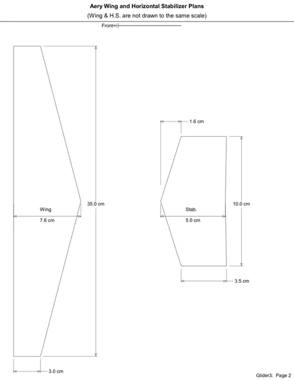

Introduction to Aerospace Engineering
Project Goal
Goal: build the foundation for the Aerospace Engineering major: how aircraft fly (forces of flight, center of gravity, stability, control surfaces, the atmosphere), the history of space exploration, and the engineering design process. Each topic is practiced on hands-on team builds.
What I Built
A SEAPERCH underwater ROV, a NACA 23018 airfoil analysis and CAD model, a hardwood puzzle cube, a trimmed balsa glider, and a team research paper on astronaut boredom on long missions.
Photos & Visuals



Course Topics
- Forces of flight. Lift, weight, thrust, and drag, plus center of gravity and stability.
- Aircraft control. Control surfaces and how they move an aircraft about each axis.
- Aerodynamics and the atmosphere. Aerodynamic forces, airfoils, and how air properties change with altitude.
- Space. The history of space exploration and rocket fuel efficiency.
- Engineering design process. Applied on team builds and documented in formal technical reports.
My Role
I completed the course's individual assignments and worked on team projects, including the SEAPERCH ROV and the astronaut-boredom research paper.
Key Problem Solved
Connecting classroom theory to hands-on builds: using what we learned about forces, stability, and airfoils to make a glider fly, an ROV maneuver, and a wing section perform.
What I Learned
Flight fundamentals, the engineering design process, technical report writing, CAD basics, and working on a team toward a deadline.